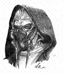

Forums galactiques > Taverne galactique : lieu de discussion informel > R_nikof...
Un Surdoué sponsorisé par un gar Bienveillant... | 3 | |
Un Marginal comme beacoup dans cette Galaxie... | 4 | |
La réincarnation de Raiwbow... | 0 | |
Notre futur Chancelier... | 3 | |
Un alcoolique... | 23 | |
Total : 33 vote(s) | ||
Pages : 1
| Dedee Réputation à la taverne : 83  04/10 ETU 14:40 | Score : 2 Détails Je vous demande à tous d'applaudir le jeune et nouveau commandant: R_nikof !
Sponsorisé par la Dedee Corparation and Cie... Ce jeune prometteur est bourré de talents... Je vous demande donc ce que vous penser de ce R_nikof... Ce serait vraiment cool si il pouvait nous dire deux trois mots sur notre galaxie... | ||
| Scorbut Réputation à la taverne : 1059  04/10 ETU 15:12 | Score : 3 Détails D'accord, moi on me dit d'applaudir, donc j'applaudis. C'est de bonne guerre (hé, visez l'humour, là, hein, elle est pas bonne, hein, elle vous fait pas marrer, hein?).
Par contre, je veux bien savoir qui est ce brave homme qui se fait présenter par le commandant le plus honnête de la galaxie, j'ai bien sûr nommé Dedee... Heu... En fait, oubliez ce que j'ai dit. Je crois que ce cher R_nikof m'indifférera au plus haut point tant qu'il n'aura pas pris la parole lui-même. Ensuite, on verra. | ||
| Dedee Réputation à la taverne : 83 04/10 ETU 16:14 | Score : 1 Détails Qui rira bien en premier ne rira pas vers la fin...
Bouuuuuuaaaaaaahhhhhhh... Je taquine l'ami Score-But ne vous vexez surtout pas.... | ||
| Vlavv Réputation à la taverne : 155  04/10 ETU 18:51  | Score : 0 Détails Je suis pour ma part extrêmement frustré de ne pas pouvoir voter autre chose...
| ||
| Dantès Réputation à la taverne : 149  04/10 ETU 19:31 | Score : 0 Détails L'est muet votre protégé ou très très timide?
Pour l'instant je n'entend que son silence...... Alcoolique ca doit être ca! | ||
| Demettra Réputation à la taverne : 348  04/10 ETU 19:33 | Score : 1 Détails J'aurais bien dit surdoué à la limite mais ce serais mentir que d' affirmer que Dedee est un gas bienveillant...
| ||
| R_nikof Réputation à la taverne : 9 05/10 ETU 19:05 | Score : 1 Détails
Bonjour tout le monde!! Vous m'attendiez?? Désolez j'ai eu un probleme avec mon hologramme. Vous savez ce que c'est..... ca fait pchiiii et puis c'est gros caca. J'ai vecu depuis ma plus petite avec Dedee Et je peut vous dire quelque chose : Non Dedee n'est pas mechant, il se met juste facilement en colere. Et maintenant que je suis la il va bien se tenir et il ne ferra plus de betise. Hein Dedee!! | ||
| Dantès Réputation à la taverne : 149 05/10 ETU 19:23 | Score : 2 Détails Dantès observa le phénomène..
"Un nez assez proéminant, un sérieux besoin de lunettes. Nan je vois pas le génie émaner de lui, j'avoue. Mais je vous croit sur parole Dedee. Bienvenue a toi R_ni Kof kof kof...s'étouffe... Kof kof kof excusez moi.." Part dans un coin calmer sa toux.. | ||
| Dedee Réputation à la taverne : 83 05/10 ETU 19:47 | Score : 2 Détails Dedee/ R_nikof...
Même Laideur, Même Puanteur, Même classe... MEME COMBAT ! | ||
| alien Réputation à la taverne : -21  05/10 ETU 19:55 | Score : -1 Détails Je trouve que Dedee et r_machin(kof) ce resemble ENORMEMENT
et je dis bien énormément et en ++ il sont bizarre et encore en ++ laid. (s'etais juste mon petit avis) | ||
| Lokki Réputation à la taverne : 281  05/10 ETU 19:58 | Score : 0 Détails "J'ai vecu depuis ma plus petite avec Dedee"
Hmmm...oui ça doit être un poivrot pour qu'il oublie des mots... | ||
| R_nikof Réputation à la taverne : 9 05/10 ETU 20:46 | Score : 1 Détails
Zut, c'est encore mon hologramme... il est pas tout a fait reparé. Le mot manquant c'etait, comme vous l'avez tous deviner : "enfance"!! | ||
| Touner Réputation à la taverne : 41  06/10 ETU 07:37 | Score : 0 Détails Si vos techniciens n'arrive pas a maintenir en bonne état de fonctionnement un simple hologramme, je ne donne pas chere de votre flotte, les vaisseaux son quelque peu plus comliqué a entretenir.
Mais mettons cela sur le dos des interferences due aux nuages de poussieres interstellaire. | ||
| Dedee Réputation à la taverne : 83 06/10 ETU 17:27 | Score : 0 Détails En même temps il n'est qu'un jeune commandant, donc il est normal que la flotte de R_nikof ne soit pas encore au point.
Dedee |
Pages : 1
Forums galactiques > Taverne galactique : lieu de discussion informel > R_nikof...